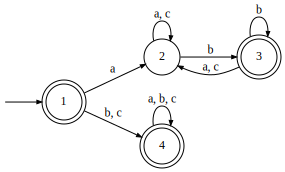
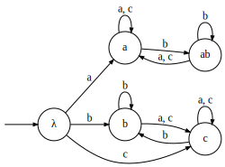

- Recall the definitions from last time
- If 𝑀 is a finite monoid and 𝑠 one of its elements:
- 𝑠⁰ = 1 = λ
- 𝑠¹ = 𝑠
- 𝑠ᵏ = 𝑠𝑠ᵏ⁻¹
- There is some 𝑛 and 𝑚 such that 𝑠ⁿ⁺ᵐ = 𝑠ⁿ
- The collection of all 𝑠ᵏ is “the submonoid generated by 𝑠”
- Aperiodic monoids
- For each 𝑠, its generated submonoid ends in a cycle of length one
- Necessarily finite, and thus regular
- Equivalent to generalized regular expressions without *
- Regular Expressions
- Base Cases
- ∅: ∅ = ∅
- λ: λ = {λ}
- σ∈Σ: σ = {σ}
- Inductive Cases
- (R⋅S): (R⋅S) = {𝑟⋅𝑠 : 𝑟∈R and 𝑠∈S}
- (R+S): (R+S) = R∪S
- (R*): R* = R*
- Generalized Regular Expressions
- Include all base cases and inductive cases of regular expressions
- More Inductive Cases
- (R&S): (R&S) = R∩S
- ∁R: ∁R = Σ*−R
- No more powerful than standard regular expressions
- Star-Free expressions forbid the * operator
- Σ* is still definable as ∁∅
- Star-Free and Regular are the most complex classes we’ll see here
- At the other extreme: trivial languages!
- Denoted by 𝟏
- For a fixed alphabet Σ, there are two languages in 𝟏:
- Not a trivial language, but consider the following:

- Its syntactic monoid is as follows:

- Full table provided below
- Every element is idempotent: 𝐸(𝑀)=𝑀
- The semigroup is identical minus λ, so 𝐸(𝑆)=𝑆
- We consider 𝑒𝑆𝑒
- 𝑒𝑆 is everything reachable from 𝑒 in the graph
- 𝑒𝑆𝑒 is what we get by following 𝑒 again from there
- See the table below
- We see 𝑒𝑆𝑒=𝑒, i.e., 𝑒𝑆𝑒∈𝟏 for all idempotent 𝑒
- This means the language is locally trivial, denoted 𝐋𝟏
- 𝐋𝟏 corresponds to Generalized Definite languages
- Boolean combinations over prefixes and suffixes
- This example language is ⋊a → b⋉
- If we have a locally-something class, there’s a tier-based extension:
- If there’s a symbol that makes a self-loop everywhere, strip it away
- If what remains is in the class, it’s in the tier-based class
- Summary
- A class 𝐕
- Has a local extension 𝐋𝐕 where 𝑒𝑆𝑒∈𝐕
- And that has a tier-based extension 𝐓𝐋𝐕
| λ |
λ |
a |
b |
c |
ab |
| a |
a |
a |
ab |
a |
ab |
| b |
b |
c |
b |
c |
b |
| c |
c |
c |
b |
c |
b |
| ab |
ab |
a |
ab |
a |
ab |
| a |
{a,ab} |
{a} |
| b |
{b,c} |
{b} |
| c |
{b,c} |
{c} |
| ab |
{a,ab} |
{ab} |